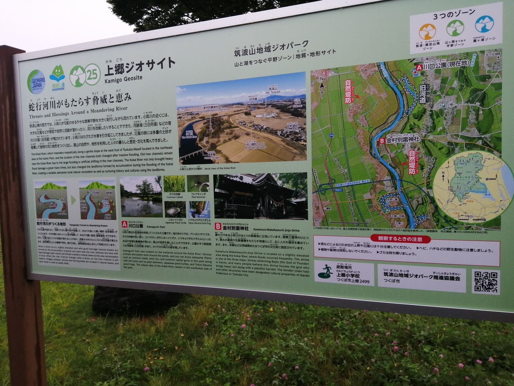
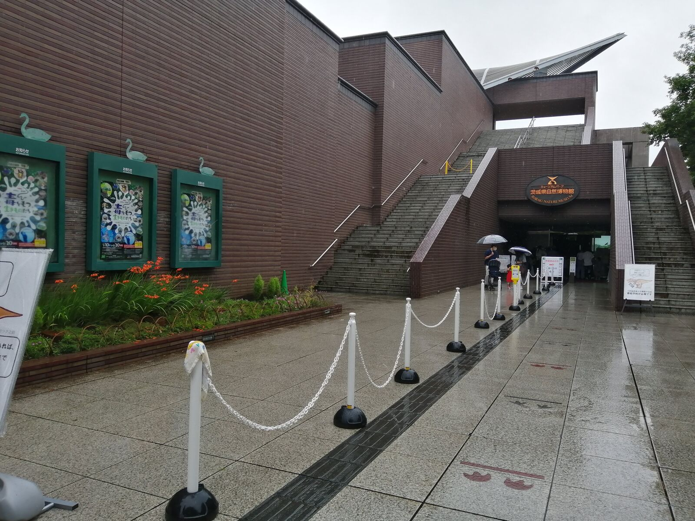
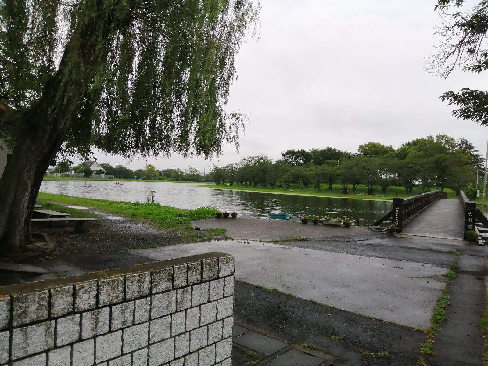
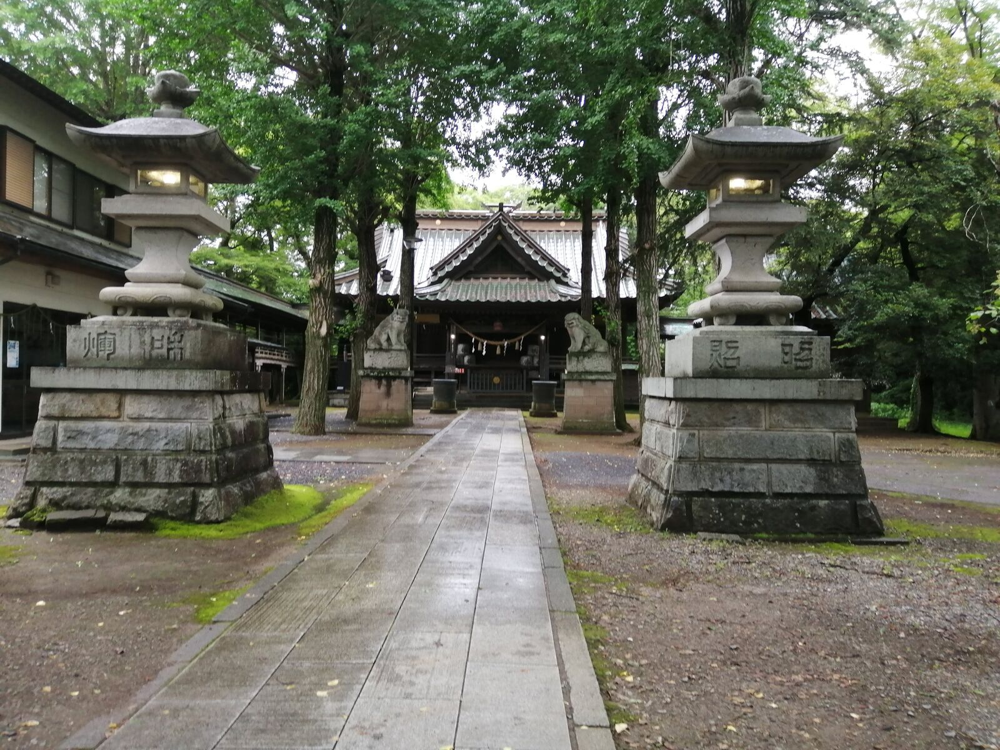

こんにちは。地質地形班です。地質地形班では、7月4日に博物館・河川地形巡検を行いました。今回は、その様子を簡単にレポートしたいと思います。
まず、私たちはつくば市にある地質標本館に向かいました。地質標本館とは、日本でも珍しい地質に特化した博物館で、貴重な岩石、鉱物、化石が展示されています。つくば市近辺で発掘された化石も展示されていて、非常に面白かったです。
続いて、茨城県坂東市にあるミュージアムパーク茨城県自然博物館を訪れました。ここにも、貴重な化石や鉱物、岩石等が展示さるている他、宇宙や自然など様々なものが展示されていました。
博物館に展示されていた松花江マンモスという大昔に絶滅したマンモスの化石は、人間の背丈よりも遥かに大きく驚きました。
また、この博物館で一番人気の展示物である恐竜のロボットは、ロボットとはいえ、最近リニューアルされたらしく、まるで生きているかのように動いていました。化石を見るだけでは、どの様に生きていたかまでは想像しにくいですが、ロボットを見る事で、恐竜の生態をよく知れました。
最後に、三日月湖や自然堤防など、小貝川や鬼怒川沿いの河川地形を見て回りました。
この写真は、三日月湖という河川が流れていた跡(旧河道)です。茨城県常総市にある吉野公園では、この三日月湖をそのまま釣り堀として利用しているみたいです。
次の写真は、つくば市にある金村別雷神社です。ここは河川に非常に近いのですが、自然堤防(微高地)の上に建っているので、河川の氾濫から逃れる事ができ、昔からの建て物や石碑が今でも残っています。
今回の巡検で、地質や地形を深く学ぶことが出来ました。地質地形班では、これからも地質や地形にまつわる様々な場所を訪れたいと考ています。